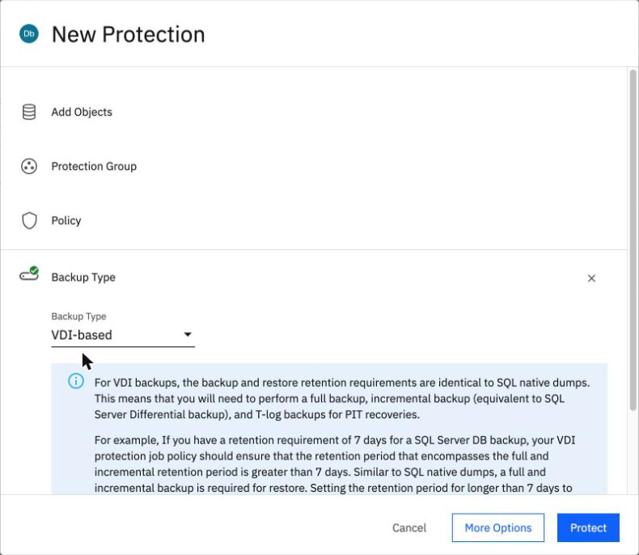
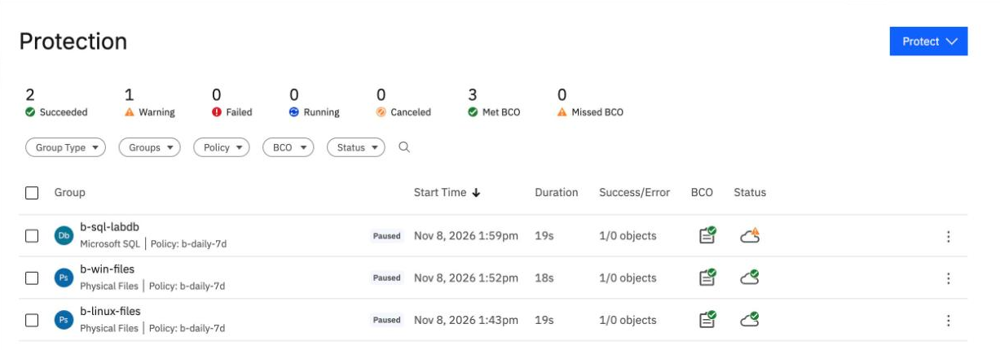
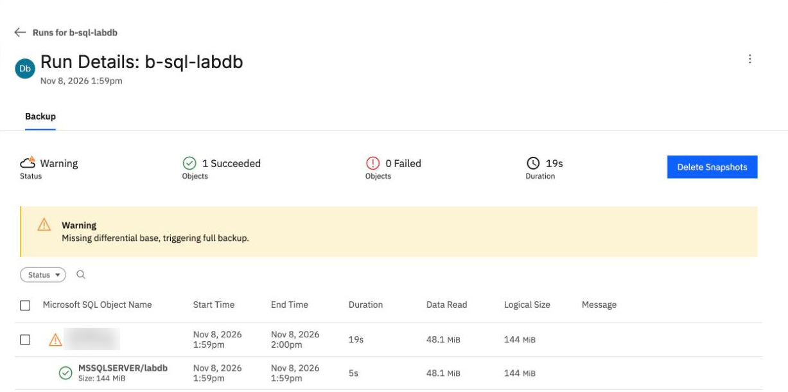
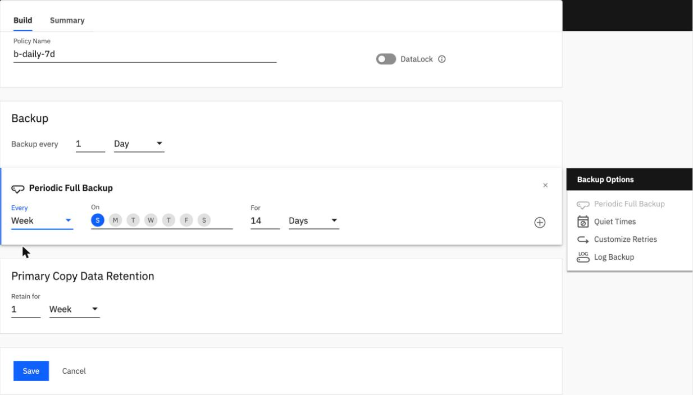
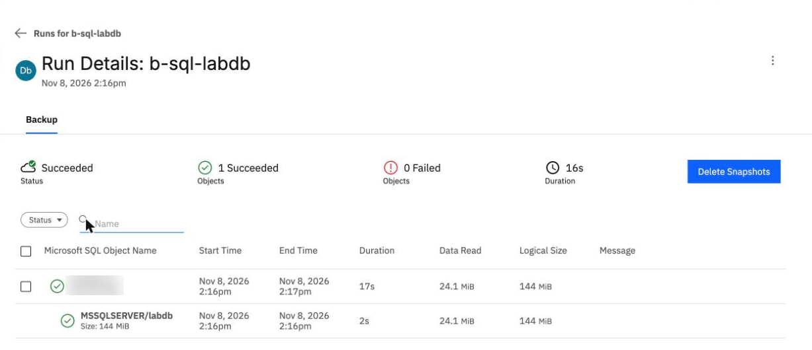

SQL Server
By the end you can say what a SQL Server group points at, read the warning on a SQL run, remove it with a periodic full backup, and recognise a run that protects nothing.
Northgate Freight is a made-up company. Its orders database, labdb, runs on a Windows server. It wants it backed up natively, and it wants to know what a backup problem looks like.
The console screens and numbers come from real runs in our lab on 8 November 2026, recorded in tutorials B3c and B4c. The restore case comes from a run on 7 October 2026. The server address in the recorded output is replaced with a made-up name, ng-sql-01, and the server name is blurred in the screenshots.
How a SQL Server group differs
The Windows server is already registered as a physical source. SQL Server is registered on top of it, and the group protects one database.
In the console you open Protect > Databases > Microsoft SQL Server. How many Backup Type choices does it offer?
Show the answer
One, VDI-based. It is stored as kNative, the type a command-line group uses.
What does the group point at to know which database to protect?
Show the answer
A group points at the database's ID. Step 4 shows why that matters.

This is the New Protection form for a SQL database. Where would you choose the backup type?
Show where
Right. The Backup Type list has one entry, VDI-based, and IBM's note below it says to plan retention for the full and incremental backups together.
The second run, and its warning
Northgate pauses the group, then runs it by hand with Run Now. After the first run it adds 5,000 rows to the database and runs again. The policy is the daily 7-day policy from tutorial B3a, with no periodic full backup.
Run Rows Read Status First (13:59:52 UTC) 100,000 50.5 MB Warning Second, 5,000 rows added 105,000 ? ?
The second database is about 5% bigger. How much does the second run read?
Show the answer
25.3 MB against 50.5 MB.SQL reads changed pages, not changed rows, and the new rows were spread over fresh pages. The tutorial did not investigate the exact reason.
Run Rows Read Status First (13:59:52 UTC) 100,000 50.5 MB Warning Second, 5,000 rows added 105,000 25.3 MB Warning
What does the second run say about the policy?
Show the answer
The run page shows a warning, [1-1-36]: the policy "does not specify a periodic full backup", and VDI backups need one. The first run's warning was "Missing differential base, triggering full backup."

Here is the Protection list after the first run. Which symbol marks the SQL group's warning?
Show where
Right. The warning symbol in the Status column of b-sql-labdb; the counts above show 1 Warning.

You opened the run. The database row is green but the server row is not. Where does the console say why?
Show where
Right. The yellow banner. The server's SucceededWithWarning is the warning on the run page; the database itself Succeeded, and 48.1 MiB is the 50.5 MB of the full backup in binary units.
Remove the warning
The warnings come from the policy, not from the database. These screens come from the BRS console in our lab. Click where you would click. After two misses the right place is marked.

Northgate opened the policy and clicked Edit. Which part of the form is the fix?
Show where
Right. Click Periodic Full Backup under Backup Options on the right. It opens at Every Day, which would make every run a full one. Choose Week and a day (Sunday was set), keep For 14 Days and click Save. Then click Save Changes to Existing Policy in the list of groups that use it.

The next run, after the change. Where do you see that the warning is gone?
Show where
Right. Status reads Succeeded and no banner appears. In our lab on 8 November 2026 the run at 14:16 UTC read 25.3 MB (24.1 MiB).
The tutorial says the same change applies to file groups, but it did not check what a weekly full does to their incremental runs.
A run that protects nothing
In a run on 7 October 2026, the database was dropped and restored between two backups. Northgate then ran the group again. This is what the run showed.
status SucceededWithWarning bytesRead 0 objects the host, ng-sql-01 (the database is not listed) message none
What went wrong?
Show the answer
The group pointed at ID 49. The restore gave the database a new ID, 53, so the run protected nothing. No message says why.
How did Northgate fix it?
Show the answer
In our lab the group was updated to point at ID 53. The first run on the new ID read 50.5 MB: a full backup of the new object, 105,000 rows.
Watch for this. A SQL run can show SucceededWithWarning, 0 bytes read and no database listed, with no message. After a database is dropped and restored, check what the group points at.
Three questions
Review from unit 3.1. Which of the four built-in policies has no data lock?
Show the answer
Basic: daily, kept 30 days. Gold, Silver and Bronze carry a lock equal to their retention.
A SQL run shows SucceededWithWarning and 0 bytes read, and lists only the host. The database was restored a few minutes before. What is the likely cause?
Show the answer
The restore gave the database a new ID. Find it and update the group to point at it.
Every SQL run ends with a warning. What do you change?
Show the answer
A weekly full backup removed the warning in our lab. Every Day would make every run a full one.
You can read a SQL Server run
A SQL group points at the database's ID. The run page explains the warnings, and a weekly periodic full backup in the policy removes them. A run with 0 bytes read and no database listed means the group lost the database.
Tutorial B3c registers SQL Server and makes the group. Tutorial B4c runs the backups, shows what the warnings mean and the new-ID fix, from the console and the command line.